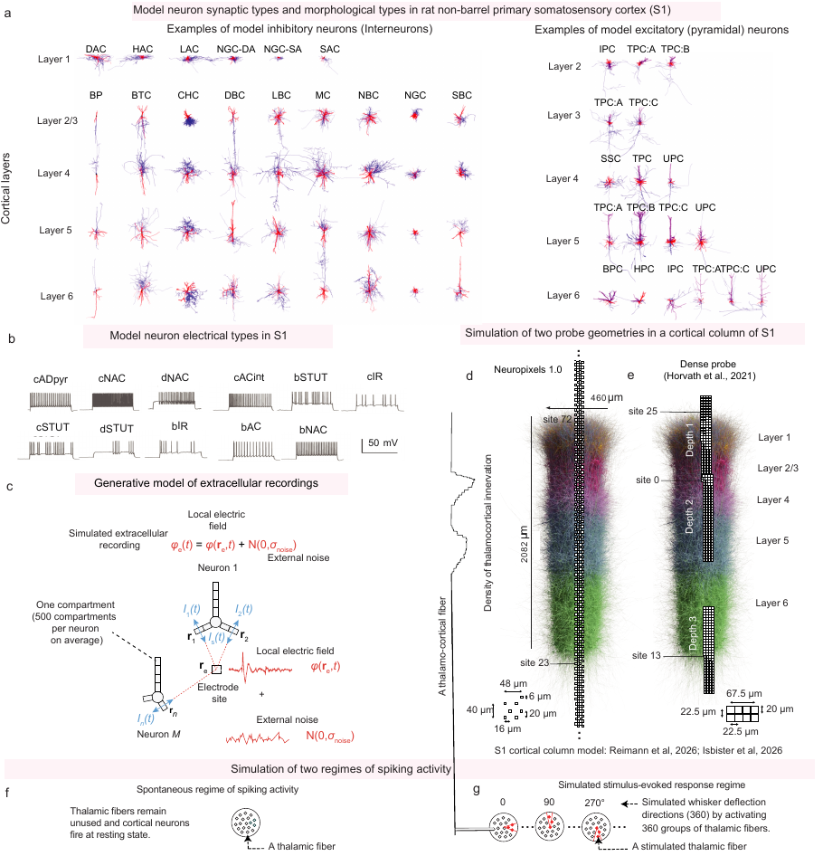
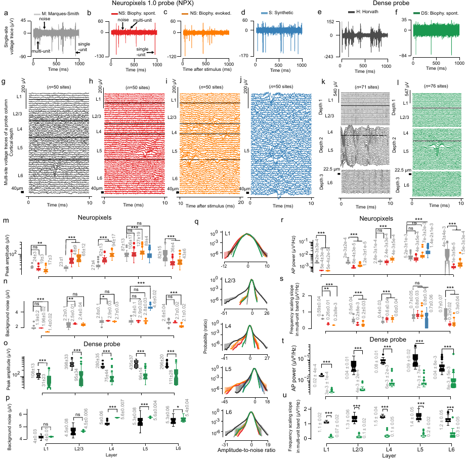
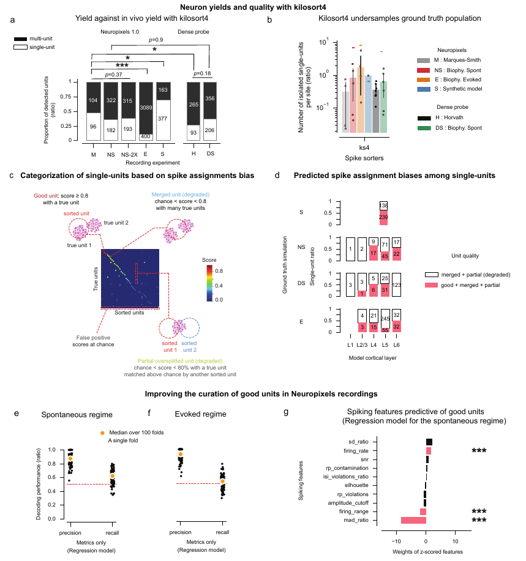
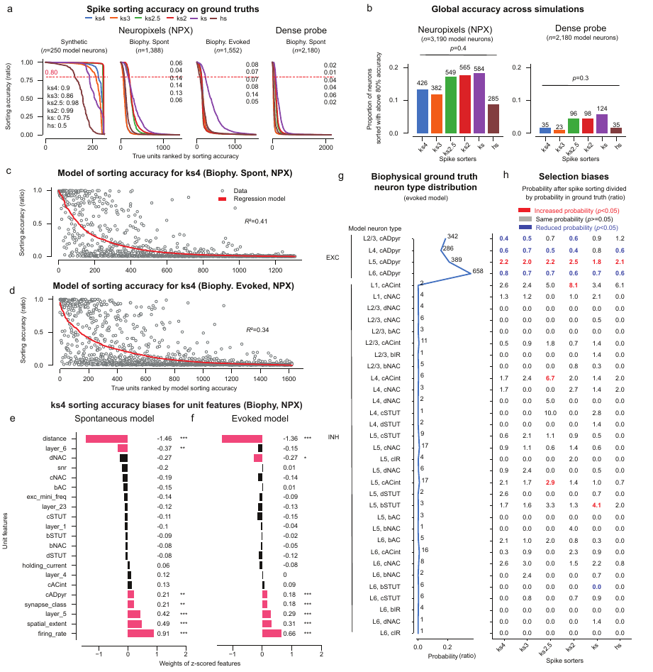
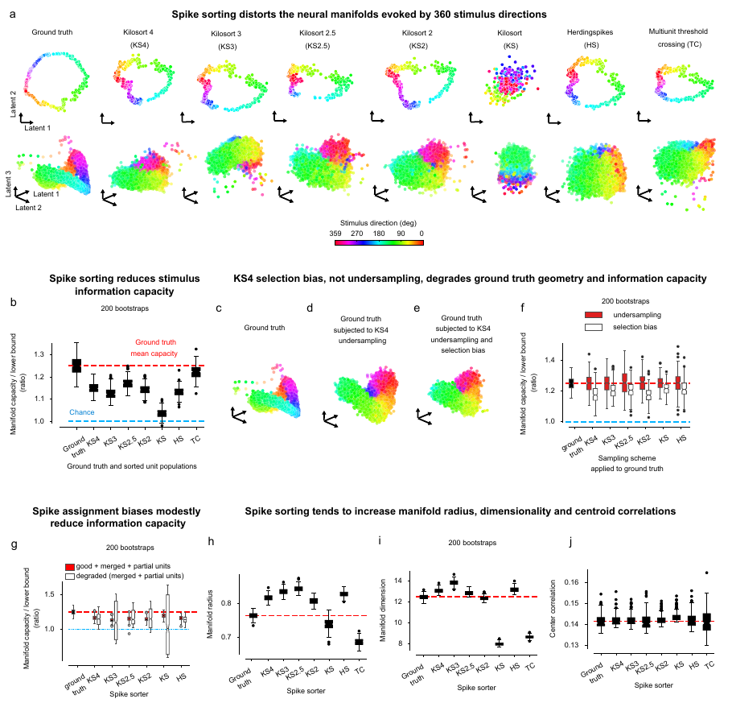
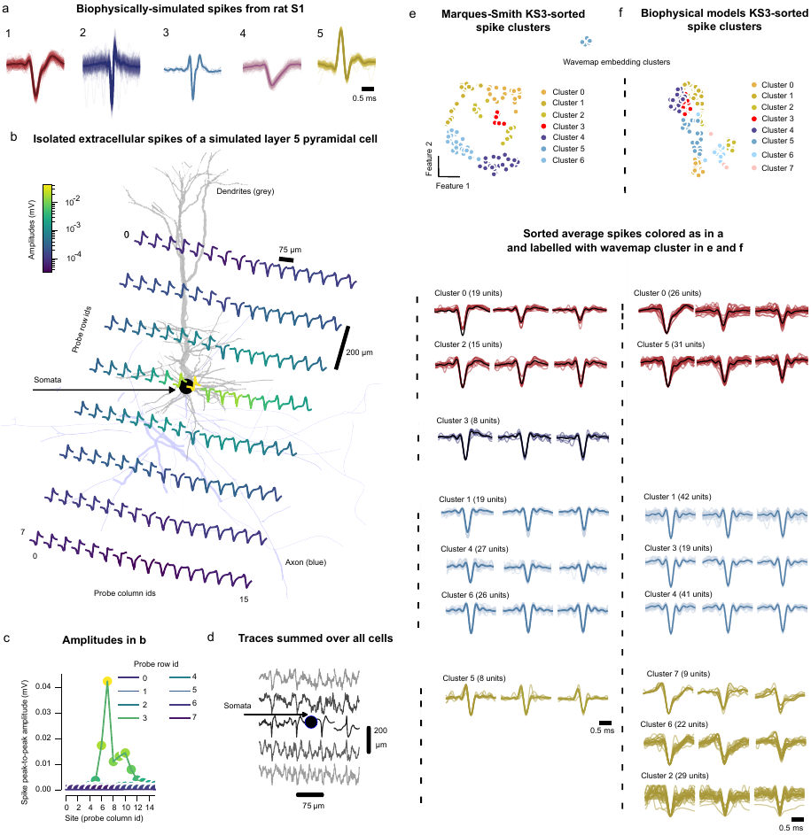
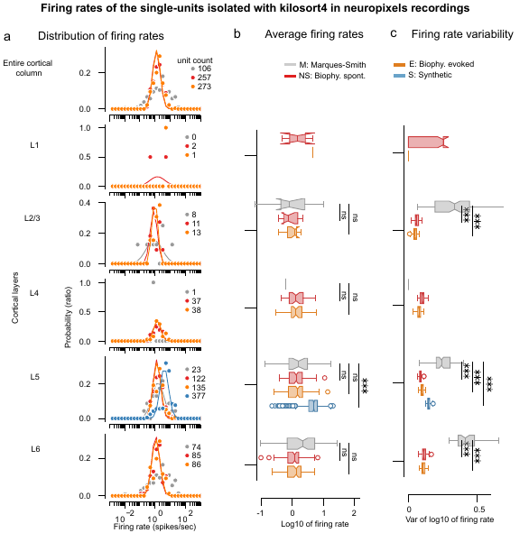

We simulated extracellular recordings from a detailed model of rat somatosensory cortex, where every spike is known. Modern spike sorters isolate about 10% of the neurons near the probe and favour some neuron types. Undersampling alone does not impair stimulus discrimination, but these biases nearly halve it.

A biophysical simulation of a cortical column of 30,190 neurons, recorded with a Neuropixels probe and a denser probe, in spontaneous and stimulus-evoked activity. The simulated traces are validated against in vivo recordings.
Spike sorters isolate about 10% of the neurons near the electrode shank. Which neurons they isolate depends on firing rate, spike extent, synaptic type and layer.
Undersampling alone does not impair stimulus discrimination. The sorters' biases reduce it by nearly half.
The simulated traces reproduce the components of in vivo recordings (single-unit spikes, multi-unit activity and background noise), their amplitude-to-noise ratio, spectra and spike shapes, compared with Neuropixels and dense-probe recordings in anesthetized rats.

Across sorters, from Kilosort to Kilosort 4 and Herdingspikes, only about 10% of the neurons near the probe are isolated as single-units. Denser probes do not raise this yield.

Because every spike is known, sorting accuracy can be measured for each neuron and related to properties that experimenters cannot observe. Firing rate, spike extent, synaptic type and layer predict which neurons are sorted well.

In responses to simulated whisker deflections in eight directions, the information capacity of the sorted populations is on average 50% lower than that of the ground truth. Threshold crossing without spike sorting loses only 10%.



The notebooks of the repository reproduce every figure. The simulated recordings, ground truth spike trains and sortings, and the in vivo recordings with their sortings, are on the DANDI Archive (dandiset 001250).
git clone https://github.com/spikebias/spikebias-paper
pip install dandi
dandi download https://dandiarchive.org/dandiset/001250/draft # or one file at a time, with the notebooksThe curation model of the paper, which selects well-sorted single-units from ten quality metrics, is a Python package:
pip install spikecurateSorting action potentials from extracellular recordings of large groups of connected neurons is essential to understanding brain function. Simulations with known spike times have driven significant advances in spike sorting, but present models do not fully account for the effect of neuronal heterogeneity on sorting accuracy. We used a large-scale detailed cortical microcircuit model to simulate recordings, evaluate modern spike sorters, and link their performance to neuronal heterogeneity. We also exposed the network to various stimuli to investigate how sorting errors affect stimulus discrimination. Here, we show that spike sorters successfully isolate about 10% of neurons near the electrode shank, that this undersampling does not impair stimulus discriminability, but that sorting biases related to firing rate, spike extent, synaptic type, and layer reduce stimulus discriminability by nearly half, which posit realistic models as a complementary approach to evaluate and improve spike sorting and hence, advance our understanding of neural activity.
The citation of the paper will be added on publication. Meanwhile, cite the code and the data:
@software{laquitaine_spikebias_code,
title = {Spike sorting biases and information loss in a detailed cortical model},
author = {Laquitaine, Steeve and Imbeni, Milo and Tharayil, Joseph and Isbister, James B. and Reimann, Michael W.},
publisher = {Zenodo},
doi = {10.5281/zenodo.17389967}
}
@misc{laquitaine_spikebias_data,
title = {Spike sorting biases and information loss in a detailed cortical model},
author = {Laquitaine, Steeve and Imbeni, Milo and Tharayil, Joseph and Isbister, James B. and Reimann, Michael W.},
publisher = {DANDI Archive},
howpublished = {\url{https://dandiarchive.org/dandiset/001250}}
}